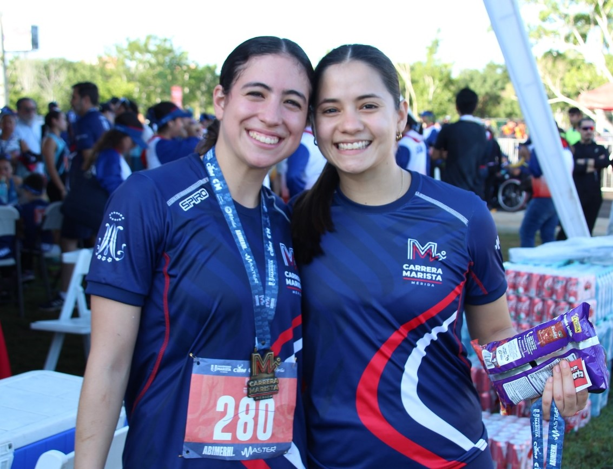
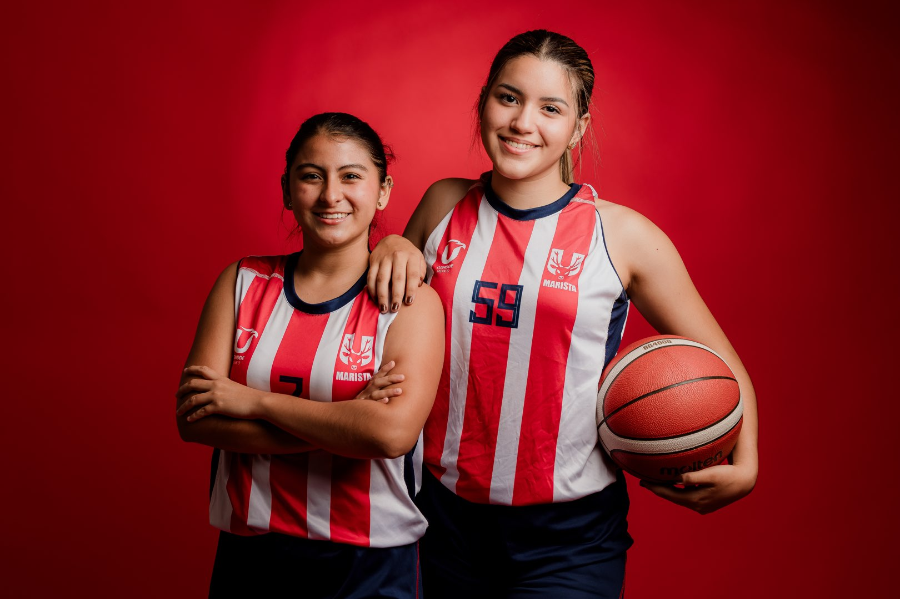
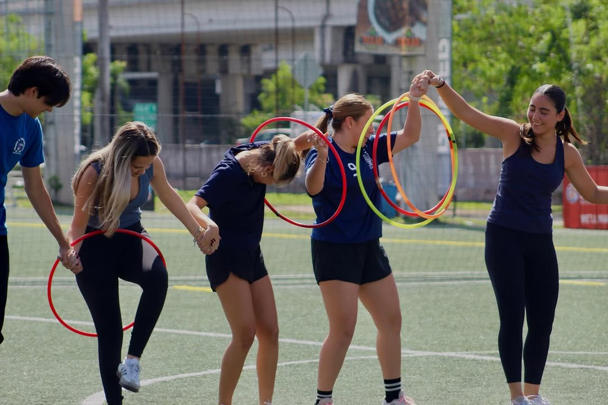
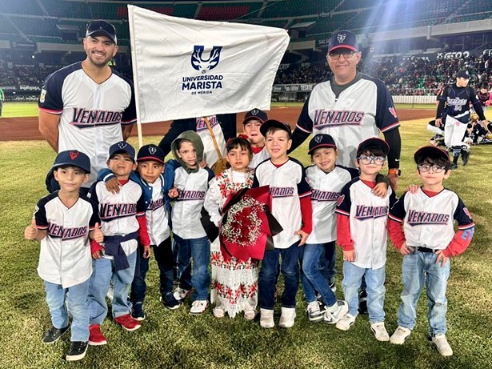

Promover la formación integral de los estudiantes mediante actividades deportivas y recreativas, fomentando valores y el sentido de comunidad universitaria.
¿Dónde estamos?
Tenemos torneos internos (Futbol 7, Tenis de Mesa, Pádel, Basquetbol 3x3, Voleibol Playa, FIFA), convivencias Rojos y Azules, entrenamientos guiados en gimnasio y participación en los programas Jueves Cultural e Inclusión.

Nuestros equipos de alto rendimiento representan a la universidad en competencias locales, regionales y nacionales.

Contamos con atención integral en salud, seguimiento emocional y apoyo institucional constante durante tu preparación y en el desarrollo de la competencia.

Formación integral de niñas, niños y jóvenes a través del deporte, promoviendo valores, espíritu de familia y hábitos de vida saludable.

Director de Deportes y Pastoral
Responsable de Atención a Deportistas
Responsable de Equipos Representativos
Encargado de Torneos Internos y Actividades Recreativas
Liga Champagnat/Instalaciones Deportivas
Estamos en el edificio Central de la Universidad.
Contáctanos:
atleta@marista.edu.mx